Práctica 4.1 - Configuración de un servidor DNS
Introducción
Esta práctica tiene como objetivo configurar un servidor DNS utilizando Bind9, realizar comprobaciones de configuración y responder a preguntas clave para consolidar los conceptos relacionados con los servicios DNS.
Requisitos previos
- Acceder a la máquina mediante el uso de ssh
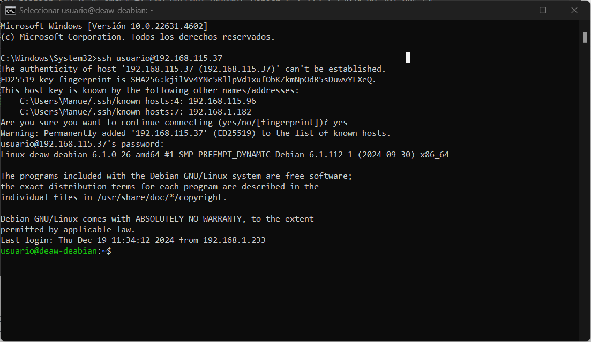
- Eliminar las entradas en
/etc/hosts.
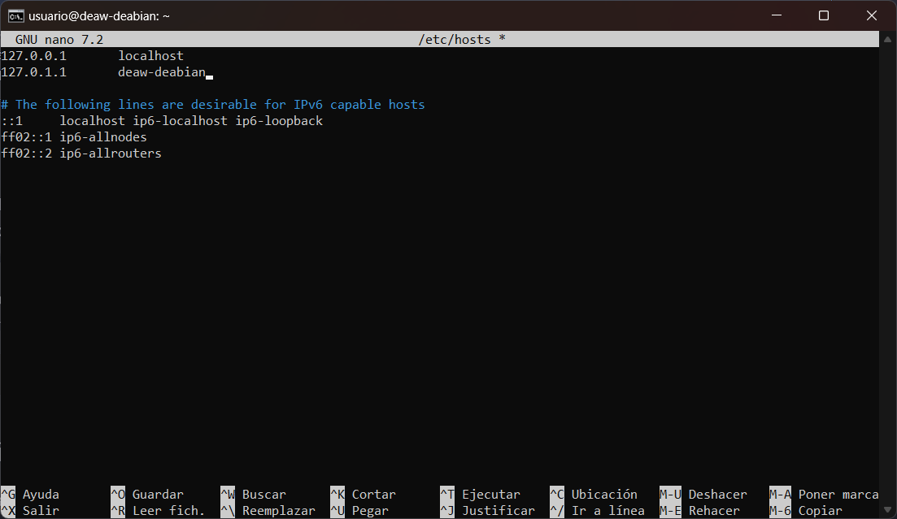
Instalación del servidor DNS
Instalamos el servidor DNS Bind9 y sus utilidades:
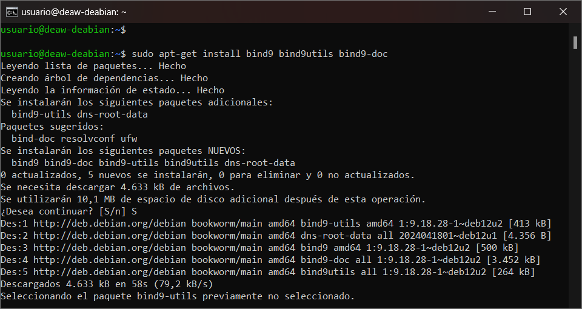
Configuración del servidor
Configuración inicial
Modificamos el archivo /etc/default/named para usar solo IPv4:
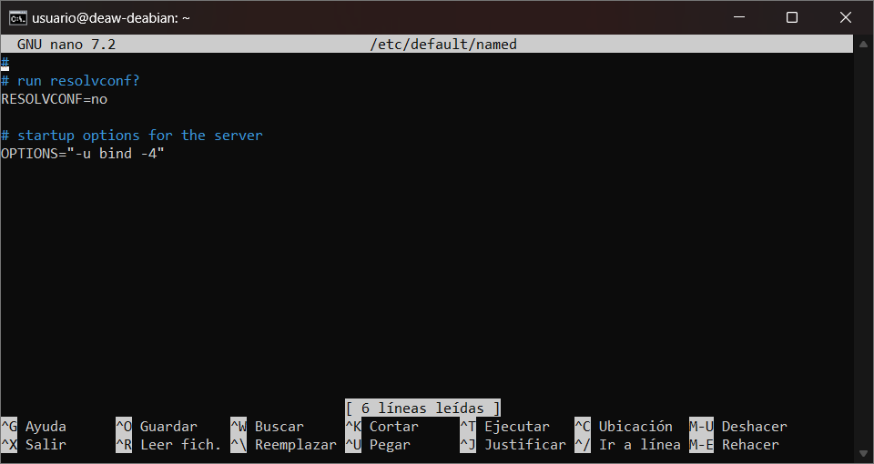
Archivo principal de configuración
El archivo principal /etc/bind/named.conf incluye referencias a otros archivos:
- named.conf.options
- named.conf.local
- named.conf.default-zones
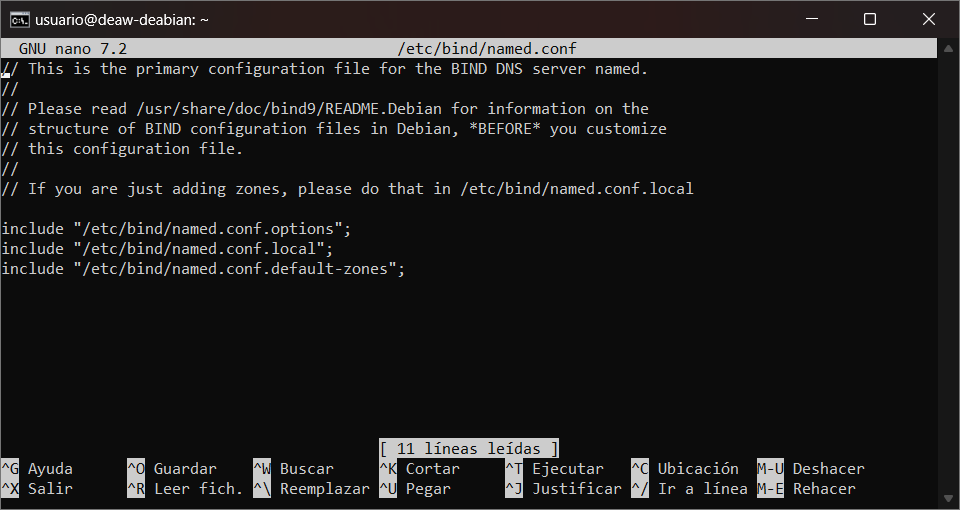
Configuración en named.conf.options
Realizamos una copia de seguridad:
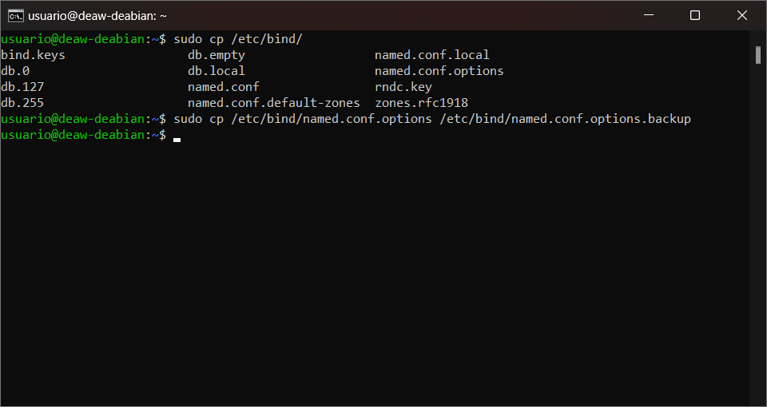
Comprobamos la configuración:
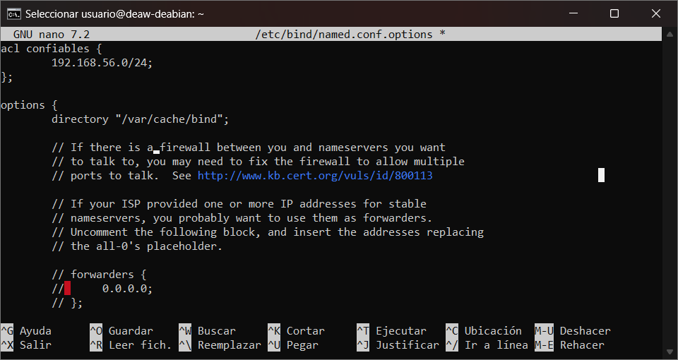
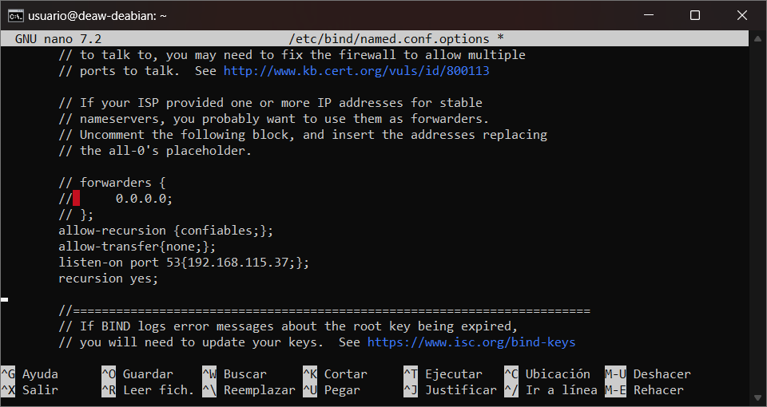
Reiniciamos el servicio:
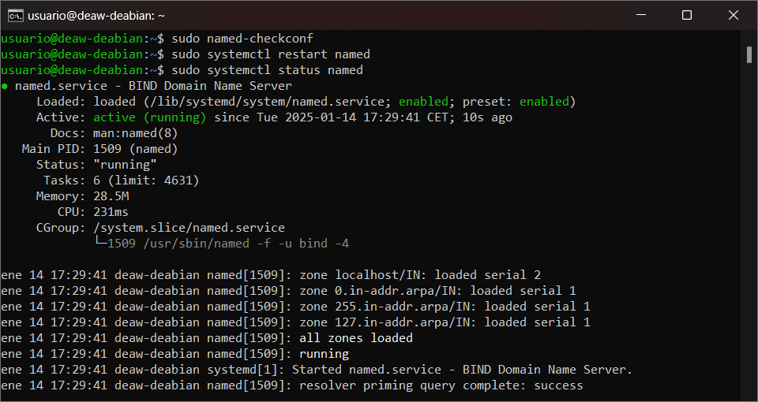
Configuración en named.conf.local
Declaramos la zona directa:
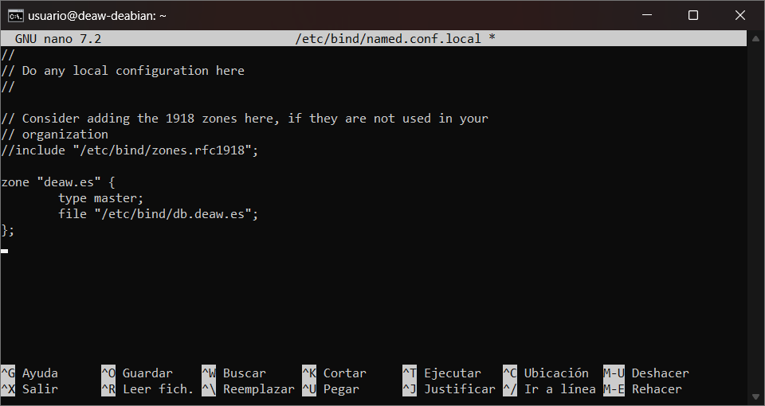
Declaramos la zona inversa:
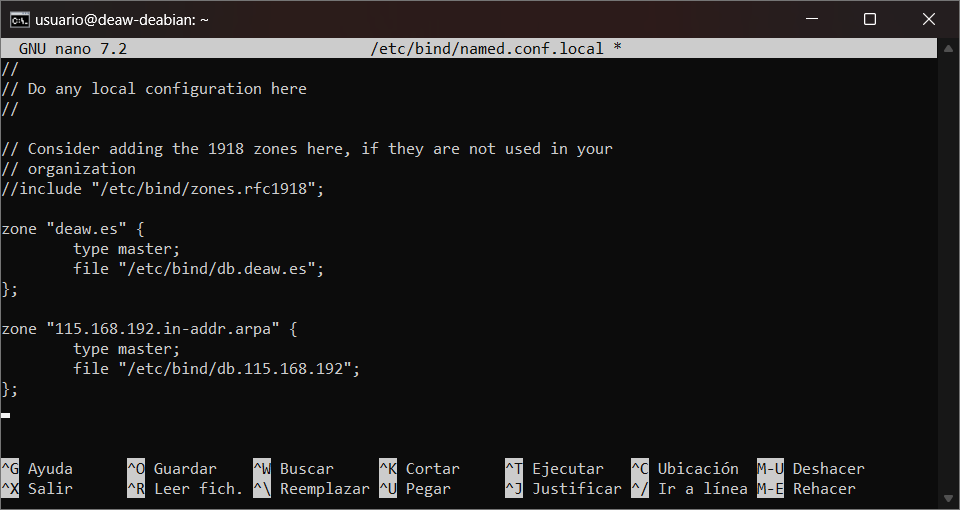
Creación del archivo de zona directa
Archivo /etc/bind/db.deaw.es:
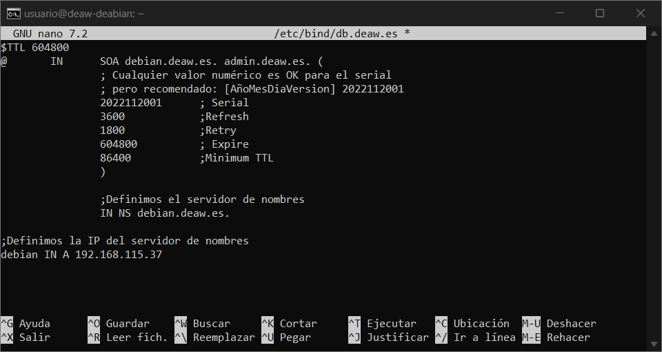
Creación del archivo de zona inversa
Archivo /etc/bind/db.X:
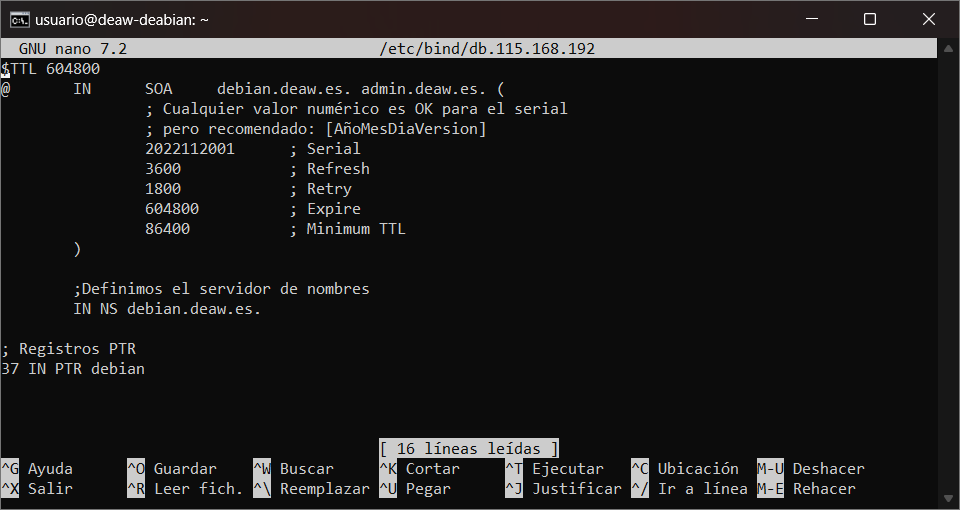
Comprobamos los archivos:
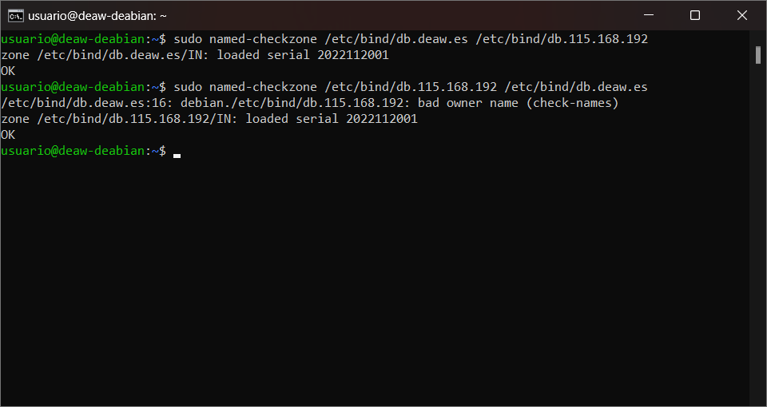
Reiniciamos Bind9:
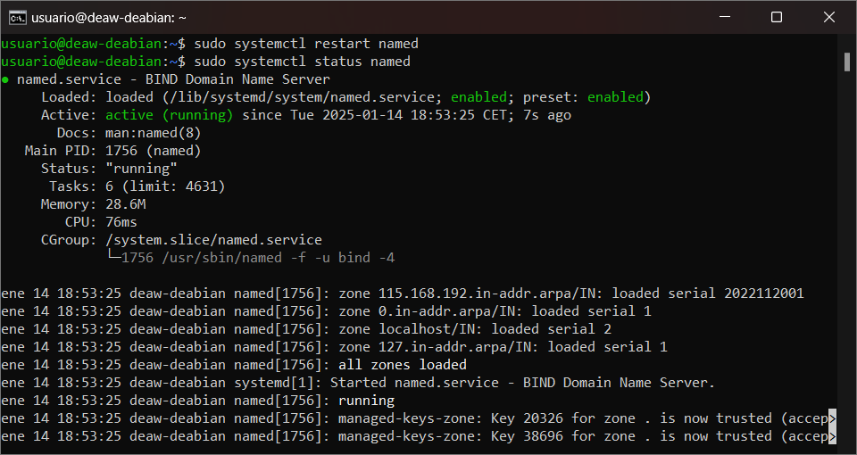
Comprobación del cliente
Configurar el cliente para usar el servidor DNS en la red privada. Comprobar:
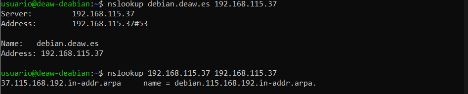
Cuestiones finales
Cuestión 1
¿Qué pasa si un cliente de otra red intenta usar tu DNS? No funcionará porque la ACL solo permite consultas recursivas desde la red configurada:
acl "trusted" {
192.168.X.0/24;
};
Cuestión 2
¿Por qué permitir consultas recursivas? Para que el servidor resuelva nombres de dominio no locales para los clientes confiables.
Cuestión 3
¿Es autoritativo el servidor DNS?
Sí, porque gestiona la zona "deaw.es" declarada como "master" en named.conf.local.
Cuestión 4
¿Qué es la directiva $ORIGIN y para qué sirve? Establece el dominio base para los registros. Se encuentra en los archivos de zona.
Cuestión 5
¿Una zona es idéntica a un dominio? No, una zona puede ser una parte de un dominio.
Cuestión 6
¿Se pueden editar los archivos de zona de un servidor esclavo? No, los servidores esclavos sincronizan los datos desde el maestro.
Cuestión 7
¿Por qué tener más de un servidor esclavo? Para redundancia y alta disponibilidad.
Cuestión 8
¿Cuántos servidores raíz existen? Existen 13 servidores raíz principales.
Cuestión 9
¿Qué es una consulta iterativa de referencia? Una consulta donde el servidor DNS responde con la mejor información que tiene, usualmente una referencia a otro servidor.
Cuestión 10
¿A qué nombre se mapearía la IP 172.16.34.56 en una resolución inversa? Se mapearía a:
56.34.16.172.in-addr.arpa